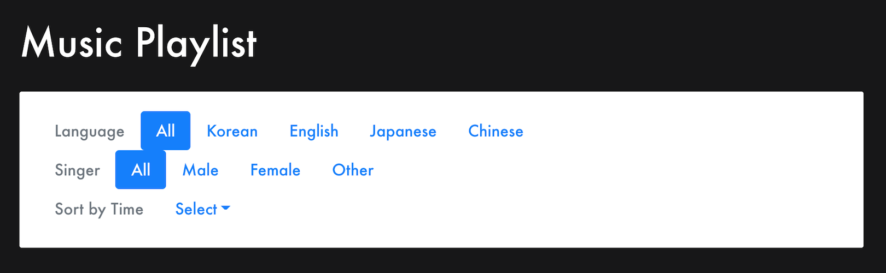
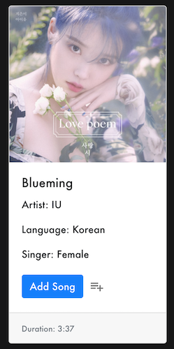
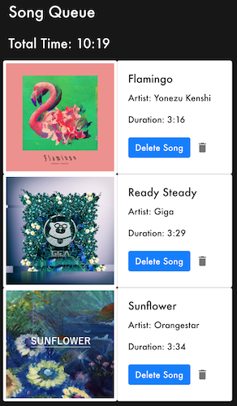

<!doctype html>
<html lang="en">

</html>

<head>
  <!-- Required meta tags -->
  <meta charset="utf-8">
  <meta name="viewport" content="width=device-width, initial-scale=1, shrink-to-fit=no">

  <!-- Bootstrap CSS -->
  <link rel="stylesheet" href="https://stackpath.bootstrapcdn.com/bootstrap/4.5.2/css/bootstrap.min.css"
    integrity="sha384-JcKb8q3iqJ61gNV9KGb8thSsNjpSL0n8PARn9HuZOnIxN0hoP+VmmDGMN5t9UJ0Z" crossorigin="anonymous">

  <title>Development</title>
  <link rel="stylesheet" href="index.css">
  <!-- TODO: add additional links here! e.g. fonts, icons, more stylesheets, etc. -->
  <link href="https://fonts.googleapis.com/css2?family=Work+Sans&display=swap" rel="stylesheet">
  <meta content="width=device-width, initial-scale=1" name="viewport" />
  <meta charset="utf-8">
</head>

<body>
  <!-- TODO: put your HTML code here! -->
  <div class="nav-wrapper">
    <nav class="navbar navbar-expand-lg navbar-light" style="width: 100%">
        <a class="navbar-brand" href="#">
            <h1>Kiwi</h1>
        </a>
        <button class="navbar-toggler" type="button" data-toggle="collapse" data-target="#navi">
            <span class="navbar-toggler-icon"></span>
        </button>

        <div class="collapse navbar-collapse" id="navi">
            <ul class="navbar-nav">
                <li class="nav-item">
                    <a class="nav-link" href="../home.html">Projects <span class="sr-only">(current)</span></a>
                </li>
                <li class="nav-item">
                    <a class="nav-link" href="../about.html">About</a>
                </li>
        </div>
    </nav>
</div>
  <div class="heading">
    <h1 style="padding-top: 10px">Development</h1>
    <h3 style="padding-bottom: 10px"> Music Playlist </h3>
  </div>

  <div class="wrapper">
    <div class="tabs">
      <div class="tab">
        <input type="radio" name="css-tabs" id="tab-1" checked class="tab-switch">
        <label for="tab-1" class="tab-label">Introduction</label>
        <div class="tab-content">
          <div class="flex-col">
            <h4>
              Introduction:
            </h4>
            <p>
              Gearing up for study sessions for finals, I decided to try to plug my favorite songs to a wider audience
              through creating an interface for creating different lineups (similar to music playlists) from a selection
              of amazing songs. I hope people give songs in different languages a chance (especially A-pop, short for
              Asian Pop) so I included filters for those languages as well. The language options implemented are
              English, Korean, Japanese, and Chinese. I also tried to let the customization experience be pleasant by
              including a singer option that describes if the song has male, female, or other vocals. The songs can be
              sorted by their duration from long to short or short to long. The final playlist includes an aggregator
              totaling up the time needed to play all the songs in the list. Songs can be added and re-added (so songs
              could play in different orders and for different repetitions). Songs can be easily added and removed by
              clicking buttons.
            </p>
          </div>
        </div>
      </div>
      <div class="tab">
        <input type="radio" name="css-tabs" id="tab-2" class="tab-switch">
        <label for="tab-2" class="tab-label">The Design</label>
        <div class="tab-content">
          <div class="flex-col">
            <h4>
              Usability Principles
            </h4>
            <h5>Overview:</h5>
            <p>
              In general, I decided to go with a dark background and white text/cards to create emphasis. I tried
              created hierarchy through having different text sizes for titles and using bootstrap react's cards. I
              tried to keep the design as clean as possible, displaying only relevant information. I also included icons
              from material-ui so that users can better associate buttons with their actions. I added media-queries
              so that the app is responsive for tablet and phone sizes.
            </p>
            <br>
            <br>
            <h5>Nav Bar:</h5>
            <div class="photo-div">
              
            </div>
            <p>For the Nav Bar, I used react bootstrap. I included pills as the selection method so the user can
              clearly see which filter has been applied. There is a dropdown menu for the sorting options. The
              descriptions are greyed out so the users knows those are not options. I kept the nav bar clean to let
              users focus on usability.</p>
            <br>
            <br>
            <h5>Song Card:</h5>
            <div class="photo-div">
              
              <p>For the Song Card, I made the image (album cover) large so that users can learn to associate the song
                title with the image. This may increase efficiency because reading a song title may take longer than
                glancing at the image. I included the information of the song in the card.text portion. The duration is
                at the bottom as a footer and I converted a number in seconds into displaying in minutes and seconds so
                the user can clearly see how long a song will be playing for.</p>
            </div>
            <br>
            <br>
            <h5>Playlist:</h5>
            <div class="photo-div">
              
              <p>For the playlist, I included an image to the left of the song information so that it does not make each
                song take up too much vertical space. I did not want to make the card too dense with information so I
                ommitted the singer and language information. I displayed the total-time at the top of the playlist so
                users will not need to scroll all the way down to see how long their playlist is getting.</p>
            </div>
          </div>
        </div>
      </div>
      <div class="tab">
        <input type="radio" name="css-tabs" id="tab-3" class="tab-switch">
        <label for="tab-3" class="tab-label">Links</label>
        <div class="tab-content">
          <h4>
            <div style="text-align: center;"><a href="https://github.com/kwang111/music-playlist" target="_blank">Link
                to GitHub Repo</a></div>
          </h4>
          <h4>
            <div style="text-align: center;"><a href="https://obscure-eyrie-95172.herokuapp.com/" target="_blank">Link
                to Deployed App</a></div>
          </h4>
          <br>
          <h5>
            Code Architecture (Also Outlined In README)
          </h5>
          <p>
            Components/How Data is Passed/User Interactions & States:
            <br>
            <br>
            - App: <br>
            Props Recieved: None<br>
            Props Passed: -> FilteredList songs(arraylist), addSong (function)<br>
            -> Playlist myPlaylist(arraylist), deleteSong (function)
            <br>
            The overarching react app. It includes the constant array of songs. It has the functions addSong (adds a
            Song to the user's created playlist called myPlaylist), deleteSong (removes a Song from the user's created
            playlist called myPlaylist), and calculateTime (which takes the users playlist called myPlaylist and
            calculates the total duration of the songs in that playlist. It helps with the aggregation). The render
            function of the app uses a Wrapper and has two sub-sections one called selection and one called playlist.
            The selection creates a FilteredList component to display the songs to choose from. The songs array and the
            addSong function is passed as props into FilteredList. The playlist section displays the aggregated duration
            of myPlaylist and creates a Playlist component to display the array myPlaylist which the users add and
            remove songs from. The myPlaylist array and deleteSong function is passed as props into Playlist.
            <br>
            <br>
            -FilteredList:<br>
            Props Recieved: list(arraylist), addSong (function)<br>
            Props Passed: -> DisplayList list(arraylist), addSong (function)
            <br>
            This component handles rendering a nav bar of filters and sort options. This component will pass a filtered
            and sorted list prop down to DisplayList. It also further passes down the prop (function) called addSong
            which it recieved as a prop from App. State variables language, singer, and sort are updated through user
            actions clicking on the nav-bar items. Once these state state variables are changed, the FilteredList
            re-renders passing down the new filtered/sorted list into DisplayList to display properly the new state of
            the App.
            <br>
            <br>
            -DisplayList:<br>
            Props Recieved: list(arraylist), addSong (function)<br>
            Props Passed: None
            <br>
            This component displays the song-cards avaliable to be selected by the user. It maps each item from the
            recieved prop called list to the function makeCard which formate the item in the list into a "Song Card"
            format showing the image, title, artist, language, singer, and duration (the footer). I used react-bootstrap
            here with CardColumns and Card. The card also has a button called Add Song which calls on the prop
            (function) addSong passed dowm from App to FilteredList to DisplayList. The addSong function will take the
            item information of that song card and create a new entry in myPlaylist with that information. In addition,
            a key is attached to each entry of myPlaylist. This will be used to remove songs from myPlaylist. Since
            myPlaylist is a state variable, this tells Playlist to re-render the user-generated playlist.
            <br>
            <br>
            -Playlist:<br>
            Props Recieved: list(arraylist), deleteSong (function)<br>
            Props Passed: None
            <br>
            This component renders the user-generated music playlist. It recieves the state variable myPlaylist from App
            as a prop and renders each item in that list into a "Playlist Song Card" by mapping the function
            PlaylistCard to each item in this.props.list. It has a button called deleteSong which will call on the prop
            (function) deleteSong passed down from App to modify the array "myPlaylist" which is passed in. When the
            User clicks on the button, it will pass in the key for the item in myPlaylist for deleteSong function in
            App.
            <br>
          <br>
        </div>
      </div>
      <div class="tab">
        <input type="radio" name="css-tabs" id="tab-4" class="tab-switch">
        <label for="tab-4" class="tab-label">Conclusion</label>
        <div class="tab-content">
        <h4>Conclusion and Takeaways</h4>
        <p>
          Though difficult, this project was my favorite project this semester! I was able to learn how to code in React and render different states. React was difficult to learn but after struggling through it, I think I gained a lot more experience and knowledge on how the code works. I wanted to make a music playlist builder because I think it is fun to think of ways to put together playlists. I thought that including a total time will be useful: sometimes people want shorter playlists, while other times you really will need that long 8 hour playlist for a work session.
        </p>
        <h4>
          Takeaways:
        </h4>
        <ol>
          <li>I learned how states and props work in React apps!</li>
          <li>I also played around with bootstrap for this project! I think I have improved compared to when I made the Redesign project.</li>
          <li>An extension I would make is to have the image link to the song on YouTube so I could share music I like!</li>
          <li>I went with a clean, minimalistic layout so people can focus on the songs. I also made the page responsive using skills I learned from the Redesign project. </li>
        </ol>
        </div>
    </div>
    </div>
  </div>

  <!-- Optional JavaScript -->
  <!-- jQuery first, then Popper.js, then Bootstrap JS -->
  <script src="https://code.jquery.com/jquery-3.5.1.slim.min.js"
    integrity="sha384-DfXdz2htPH0lsSSs5nCTpuj/zy4C+OGpamoFVy38MVBnE+IbbVYUew+OrCXaRkfj"
    crossorigin="anonymous"></script>
  <script src="https://cdn.jsdelivr.net/npm/popper.js@1.16.1/dist/umd/popper.min.js"
    integrity="sha384-9/reFTGAW83EW2RDu2S0VKaIzap3H66lZH81PoYlFhbGU+6BZp6G7niu735Sk7lN"
    crossorigin="anonymous"></script>
  <script src="https://stackpath.bootstrapcdn.com/bootstrap/4.5.2/js/bootstrap.min.js"
    integrity="sha384-B4gt1jrGC7Jh4AgTPSdUtOBvfO8shuf57BaghqFfPlYxofvL8/KUEfYiJOMMV+rV"
    crossorigin="anonymous"></script>

</body>

</html>

<!-- Sources/Sites references/used -->
<!-- Tabs formatting:
        https://getbootstrap.com/docs/4.5/components/navs/
        https://codepen.io/tutsplus/pen/VLeXqy
     Google Fonts:
        https://fonts.google.com/specimen/Quicksand
    -->